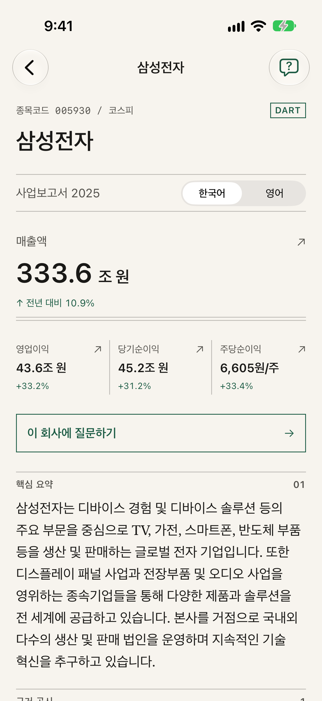
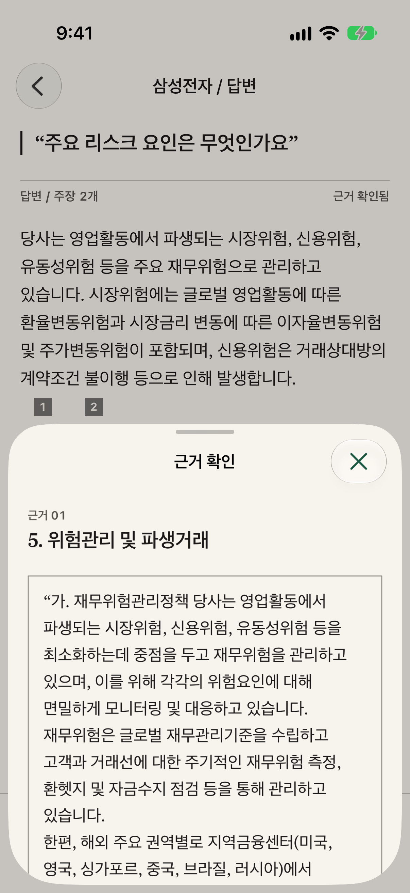

iPhone 앱 · AI · 개인 프로젝트 · 2026.07–2026.11데모
Filing Digest
한국과 미국 기업의 공시에서 주요 수치를 살펴보고, 원문을 열어 확인할 수 있습니다. 수치와 설명을 함께 보며 기업의 실적을 이해할 수 있도록 만들었습니다.
- Python
- FastAPI
- PostgreSQL · pgvector
- SwiftUI
- 24/24기준 질문 통과3개 기업
- 18개기업연간 공시 23건
- 519오프라인 테스트 통과
왜 수치와 AI 설명을 분리했나?
재무 수치는 구조화 데이터에서 가져오고 AI 설명은 별도로 검사합니다. 일부 생성 오류나 인용·수치 검사 실패 시 설명을 숨기고 수치는 그대로 보여 줍니다.


핵심
- 검사에 실패하면 설명을 숨기고 저장된 수치는 그대로 표시
- 기준 질문 24/24 통과 · 2026.10.03
동작 흐름
- 공시 수집
DART와 SEC 공시를 받아 회사, 공시, 재무 수치, 본문 조각을 한 트랜잭션에서 교체합니다. 접수번호에 고유 제약을 걸어 같은 공시가 두 번 들어가지 않습니다.
- 검색
본문을 최대 1,200자 조각으로 나눠 임베딩으로 저장하고, pgvector의 HNSW 인덱스에서 코사인 거리로 찾습니다. 유사도 기준 0.42에 못 미치는 조각은 쓰지 않습니다.
- 설명 생성
모델에는 JSON 스키마를 지정해 설명과 인용 번호를 받습니다. 재무 수치는 모델이 아니라 구조화된 데이터에서 가져옵니다.
- 검사
인용 번호가 실제 조각을 가리키는지, 설명에 금액·비율·배수 같은 재무 수치가 들어가지 않았는지 검사합니다. 연도와 개수는 허용합니다. 실패하면 설명을 숨기고 저장된 수치는 그대로 보여 줍니다.
공개 데모는 녹화된 읽기 전용 워크스루이며 실제 API를 호출하지 않습니다. 인용 번호·금융 표현 검사가 모든 문장의 정확성을 보장하지는 않습니다.